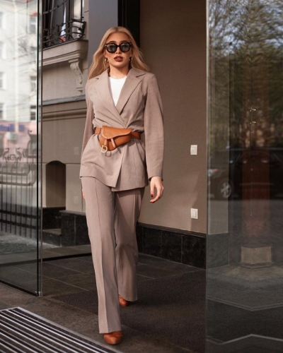
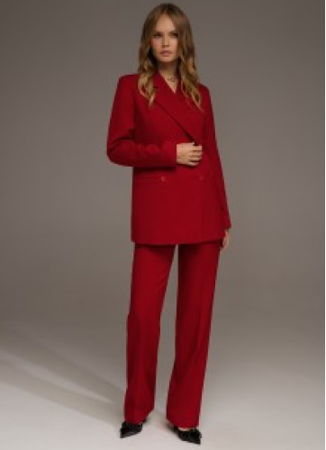
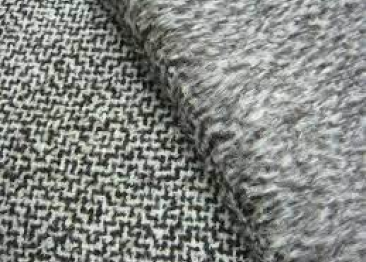
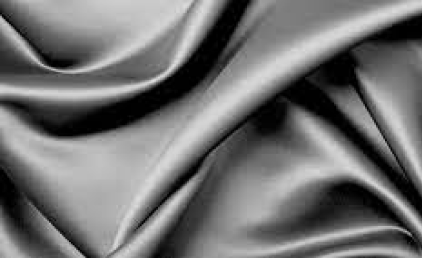
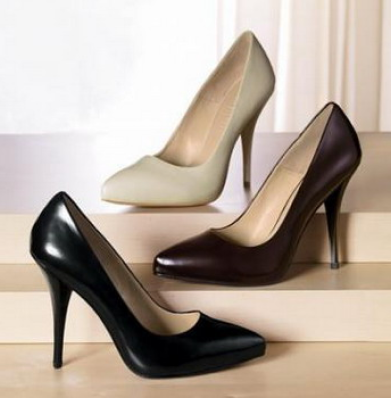
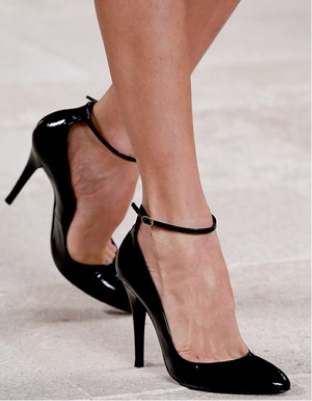
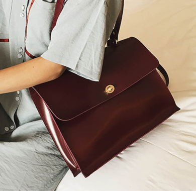
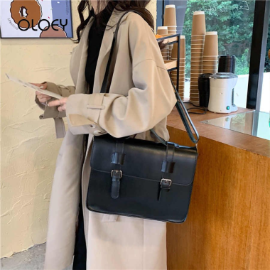
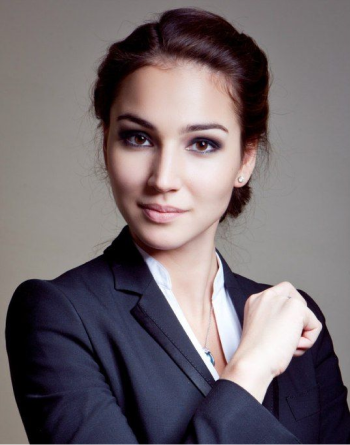
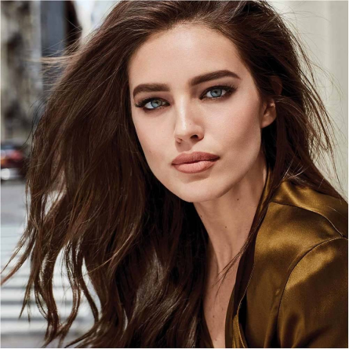

Имидж деловой женщины
Хорошо проработанный имидж помогает женщине продвигаться по карьерной лестнице. Пользуясь секретами создания делового образа, вы будете производить на окружающих нужное впечатление и достигать поставленных целей. Хотите овладеть мастерством? Мы дадим несколько рекомендаций.
Сферы влияния
С помощью имиджа можно повлиять на 4 сферы:
- Рабочий процесс.
- Отношения с коллегами.
- Общественную деятельность.
- Деловые встречи.
Имидж деловой женщины должен соответствовать сфере деятельности, в которой она себя реализует. Если представительницам творческих профессий — например, художницам или дизайнерам — простительны некоторые погрешности в стиле одежды и манере разговора, то бизнес-леди из финансовых и политических сфер — нет. Особенности имиджа первых могут восприниматься общественностью как фишка
и способ самовыражения, вторых — как дурной тон. Так как же последним постоянно поддерживать свой деловой статус?
Создание имиджа
На Западе широко распространена фраза: «Второго шанса произвести первое впечатление не бывает». Бизнес-леди всегда должна быть на высоте, ведь от этого зачастую зависит карьера.
Ключевыми факторами, которые производят положительное впечатление на окружающих, являются:
- элегантная одежда;
- привлекательная прическа;
- тонкий макияж;
- впечатляющие аксессуары.
Цвет одежды также характеризует вас как личность, а зачастую свидетельствует о вашем авторитете и власти, которой вы обладаете. В женской одежде цвет имеет особое значение, так как его можно использовать для того, чтобы подчеркнуть или приглушить естественный цвет лица. При покупке деловой одежды стоит отдать предпочтение костюмам и блузкам однотонных расцветок, допустимы мелкая полоска или клетка. Главное, чтобы все элементы гардероба сочетались по цвету, и цветов было не более трех.
Уверенные в себе бизнес-леди могут отдать предпочтение достаточно ярким, насыщенным цветам. Это позволит привлечь к себе внимание. Так, Маргарет Тэтчер зачастую появлялась на официальных приемах в красных и синих костюмах, а английская королева Елизавета иногда отдает предпочтение строгим костюмам ярко-желтого цвета. Более скромно и элегантно смотрятся пастельные тона.
Как это ни странно, черный цвет не соответствует деловому этикету. Деловому костюму противопоказаны набивные ткани с ярким рисунком (цветы, горох, крупная клетка или полоска), ядовитые цвета, а также сочетания красный-зеленый, желтый-розовый, желтый-красный.


Ткань должна быть немнущейся, добротной и одновременно приятной взгляду. Удобнее, если ткань подходит к любому сезону, тогда костюм можно надевать в любое время года. Лучше всего смотрятся ткани из натуральных (шерсть, шелк) или смешанных волокон, выглядящих как натуральные, поскольку имеют хороший вид, меньше изнашиваются и не так сильно загрязняются в сравнении с другими тканями.


Одно из главных правил в одежде, особенно деловой, — вещь должна хорошо сидеть. Если выбранная вещь немного велика, лучше отдать ее в переделку. Следует помнить, что любая вещь, которая не по фигуре, независимо от цены и марки производителя будет смотреться непривлекательно. Слишком тесная одежда не стройнит, а, наоборот, полнит.
Обувь должна быть на среднем или высоком каблуке — от 2,5 до 7,5 сантиметра. Предпочтение стоит отдать туфлям из натуральной кожи, так как они более удобные, к тому же прослужат вам дольше и на ноге смотрятся лучше. Обувь должна быть закрытой, то есть не должно быть видно ни пяток, ни пальцев, а также соответствовать цвету костюма или быть черной, но никогда — белой. Ни при каких обстоятельствах в деловом гардеробе не может присутствовать открытая (босоножки, сандалии), спортивная и грубая обувь. В дневное время суток нельзя носить лакированную обувь.
Правило, которое никогда нельзя нарушать в деловом гардеробе: в любое время года надо носить чулки или колготки. Цвет колготок должен быть нейтральный или телесный, допускаются прозрачные колготки темно-синих, черных и кремовых тонов. Исключение из правила: с брюками строгого покроя и с широкими брюками можно носить специальные носки под брюки.


Что касается украшений , то деловой этикет позволяет женщинам носить кольца, правда, только на безымянных пальцах. Два кольца вместе носить не рекомендуется. Если у вас комплект украшений, то можно надеть не более двух элементов, например серьги с браслетом. Днем лучше отдать предпочтение полудрагоценным камням (бирюза, агат, гранат, яшма), а вечером допускаются и прозрачные драгоценные камни (бриллианты, сапфиры, изумруды). Хорошо дополняют деловой костюм украшения с жемчугом. Изделия из кожи, дерева и металла также соответствуют деловому стилю, если они не слишком крупные. Главное — помнить, что во всем важна золотая середина. Лишние украшения или полное их отсутствие — не для деловой леди.
Необходимо помнить, что деловой стиль — это всегда сдержанность и строгость, но в то же время — изящество. Тщательно и гармонично подобранные стильные аксессуары, такие как сумочка, часы, мобильный телефон, ручка, визитница, органайзер, очки — влияют на имидж деловой женщины, выгодно дополняют его, подчеркивая неповторимость и уникальность.
Сумочка (дипломат, атташе-кейс) является неотъемлемым атрибутом делового стиля женщины, сделанные из кожи хорошего качества без ярких украшений. С большинством туалетов вполне элегантно выглядит черная или красновато-коричневая сумка. Если основной цвет вашей одежды темно-синий, то можно выбрать сумку такого же цвета.


Часы являются верхом элегантности в классическом деловом стиле. Они могут быть как классического черного цвета, так и цветом совпадающим с костюмом.
Мобильный телефон. Может быть какой угодно марки и сколь угодно полифункциональным, основное, что необходимо помнить: звонки должны быть нейтральными (не допустимы даже классические мелодии). Расцветка вашего мобильного телефона должна быть классической (креативные росписи не приветствуются), а чехол, при наличии такового, должен быть из натуральной кожи. Телефон, подвешенный на шнурке и украшающий шею, не допустим в деловом мире.
Ручка. Наиболее престижными считаются перьевые ручки. Дорогая ручка солидной марки является отражением респектабельности ее владелицы. Наилучшим сочетанием является соответствие цветов ручки с цветом органайзера, при этом, надо учитывать размер вашей руки и толщину ручки.
Визитница должна сочетается по стилю и цвету с органайзером.
Органайзер. Несмотря на наличие соблазнительно яркой цветовой палитры, стоит помнить, что существуют традиционные деловые цвета: коричневый, черный, бежевый, темно-синий, бордовый.
Очки придают женщине деловой вид, хотя и несколько снижают ее привлекательность. Брюнеткам лучше идут оправы для очков в тон их волос, блондинкам и рыжеволосым — оправы коричневого цвета. Женщина в затемненных очках, даже в самых модных и дорогих, не вызывает доверия.
Стоит помнить, что мелочей (как бы хорошо они не сочетались) не должно быть много, деловой стиль характеризует скромность. Стилистика всех аксессуаров должна быть одинаковой, и при этом сочетаться с образом в целом, а так же соответствовать корпоративной культуре вашей организации и отражать статус в ней.
Макияж. Основная задача делового макияжа внушать людям доверие, спокойствие, но ни в коем случае не демонстрировать свою сексуальность. Утром важен свежий цвет лица. Многие женщины пользуются тональным кремом, но допускают ошибку, нанеся его однотонно, в результате чего на лице «маска».
Профессиональные визажисты советуют на все случаи жизни купить два тональных крема: один на тон темнее, другой на тон светлее цвета кожи. С утра выдавить на руку по капельке разного крема, смешать и наносить на лицо. Дневной крем с увлажняющим эффектом лучше наносить под тональный крем. А вечером снимать макияж лучше всего — питательным.
Цвет лица должен выглядеть естественно. Важно пользоваться качественной косметикой, чтобы в течение дня не подправлять макияж.
Вульгарно смотрятся прорисованные брови, поэтому, откажитесь от такой «кукольности». Помаду стоит подбирать мягких матовых оттенков, (коричневую, коралл, вишня, кремовую), желательно водостойкую.
В дамскую сумочку можно взять влажные салфетки, компактную пудру, яркую помаду. Этот набор вам пригодится, если вечером придется макияж сделать вечерним. И главное — макияж этот нежен, потому универсален.
Вульгарно смотрятся прорисованные брови, поэтому, откажитесь от такой «кукольности». Помаду стоит подбирать мягких матовых оттенков, (коричневую, коралл, вишня, кремовую), желательно водостойкую.
В дамскую сумочку можно взять влажные салфетки, компактную пудру, яркую помаду. Этот набор вам пригодится, если вечером придется макияж сделать вечерним. И главное — макияж этот нежен, потому универсален.


Презентация в соцсетях
Без этого в современном мире никак. Часто именно через соцсети знакомятся с потенциальными партнерами и сотрудниками – и крайне важно уделить внимание своему онлайн-имиджу.
Мы выделили четыре самые важные шага в построении качественного представления личного бренда в соцсетях.
Мы выделили четыре самые важные шага в построении качественного представления личного бренда в соцсетях.
- В первую очередь, определите самую продуктивную для вас соцсеть. Вести все параллельно – непросто и отнимает немало времени. В делах, где важна визуальная составляющая – визаж, фотография, бизнес, связанный с продажей косметики или одежды — будет уместным, скорее, Instagram. А вот для бизнеса, о котором лучше расскажет текст – стоит использовать Facebook.
- Не менее важный момент – это ваш никнейм, имя пользователя. Это касается и электронной почты. Продумайте нейтрально-деловое описание для бизнес-профиля и четко укажите свою сферу деятельности, специализацию.
- Фотография профиля: она должна быть качественной и, по возможности, без слов рассказывать, чем вы занимаетесь. Например, визажист – с кистями для макияжа, фотограф – креативное фото в авторской стилистике, владелица шоурума – в знаковом сезонном образе.
- Контент. С точки зрения личного бренда в аккаунте, который презентует вас как профессионала, 70 процентов публикаций стоит посвятить своему делу, 10 — увлечениям и 20 – личным снимкам. Возможно, ваш клиент выберет именно вас из многих, потому что вы, как и он, увлекаетесь теннисом или кулинарией.
Манеры
Тактичность, вежливость и знание правил этикета, безусловно, добавят плюс к репутации. Но в бизнесе на первый план выходят другие манеры. Их называют soft skills — навыки, на первый взгляд, не имеющие отношения к основному занятию, но благоприятствующие успеху. К ним относятся коммуникабельность, эмоциональный интеллект, критическое мышление.
Профессионализм
Имидж невозможно поддерживать без постоянного
самосовершенствования
в профессиональном плане.
самосовершенствования
в профессиональном плане.
Бизнес-леди в совершенстве должна знать:
- Область своей профессиональной деятельности.
- Методы управления людьми.
- Правила делового этикета. Причем не только знать, но и соблюдать.
Проверьте как вы усвоили статью!